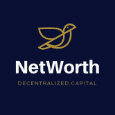
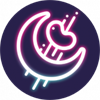

STEPON STEPON 是一款内置 Game-Fi 和 Social-Fi 元素的 Web3 生活方式应用程序。 STEPON 是一款具有 Social-Fi 和 Game-Fi 元素的 Web3 生活方式应用程序。 配备 NFT 运动鞋的用户——在户外散步、慢跑或跑步以赚取 S
Stickman's Battleground Stickman’s Battleground 是一款#NFT 游戏，拥有多种游戏模式供玩家体验。 特别是，PvE 游戏模式允许玩家通过由先进的抗通胀机制调节的平衡代币经济学轻松赚取收益。 最
StocksBSC StocksBSC 是基于币安智能链构建的独特 dapp。 STOCKS 代币是具有巧妙转折的 BEP-20 代币：每次其他人根据持有的代币数量购买、出售或转让代币时，每个 STOCKS 持有者都会直接
Stone Temple Binance 石庙币安将成为币安智能链上唯一用户拥有的区块链平台！ 所有平台收入要么作为红利分配给所有权代币质押者，要么为收益代币提供 AMM 支持。 该平台的 dApps 包括
Stoner Cats 成为魔法的一部分。 资助您想观看的内容。 这就是我们在 Stoner Cats 所做的事情。 购买我们的收藏 NFT 以观看 Mila Kunis 和朋友们制作的新系列动画短片，包括《玩具总动员 2
Storm Yield Finance Storm Yield Finance 是一个 DAO 和 DeFi 生态系统，它将通过每 5 分钟提供 Auto Staking 和 Auto Compounding 来改变全球数百万人的生活，固定 APY 为 669,212.62%。 Storm Yield DAO 将专注于 NFT 和 Music 项目
StormSwap Finance StormSwap 是由 Avalanche 提供支持的即将推出的可持续去中心化收益农业和收益聚合器协议 #Cronos 生态系统每天都在不断壮大⚡️ 我们相信 Cronos 将超越任何和所有的期望。 让我们继续
Storybook Brawl Storybook Brawl 是最先进、最安全的区块链云基础设施，具有隔离、无限可扩展的云计算网络，引领基于币安智能链的去中心化未来。 给自己最好的支持，并阅读这个小狗
Strainz 欢迎来到 STRAINZ 你准备好拥抱你的 NFT 未来了吗？ STRAINZ 是 BSC 上第一个 NFT 收益生态系统 + 全包市场。 工作系统现在，而不是以后- 当您购买了一个项目并且必须等待他们是
Strange Times NFT 由艺术家/音乐家 Ahal Eden 和作家 Magi Otsri 创建的 7,777 名 Misfits 在以太坊区块链中漫游。 与Etoro合作。 格格不入的故事将被改编成一系列视听书（“A/V书”）。A/
Stratton Oakmont Stratton Oakmont TRX 是一个共享资本分配平台，通过 Tron 区块链内经过验证的智能合约自动、安全和透明地进行管理。 没有人可以修改它或让它消失 有“客户”，也有特殊客户
StreetSwap StreetSwap 是 Thugs.fi 项目的 AMM 分支。 来 StreetSwap 满足您的所有交易需求。 为任何代币对提供流动性，以获得链上的一些最佳费用奖励！ 将您对 StreetSwap 的访问与我们的 Traphouse Yield Farms 结合起来，在
Strike Crypto Metaverse Strike Crypto Metaverse 是一款基于币安智能链的 NFT、Play-to-Earn 游戏。 该游戏适用于热爱这项运动的玩家。 我们的想法是交付一个精心设计和计划的 NFT Metaverse 项
Strike Finance Strike Finance 是一个建立在以太坊上的去中心化货币市场，使用户能够在没有中央权限或控制的情况下在平台上借入和提供抵押品。 🎊🎊🎊🎊🎊 重磅消息！！！ 🎊🎊🎊🎊
Strudel DAO 馅饼 Strudel DAO 构建了第一个单向、无需信任的桥接协议，将比特币 (BTC)、比特币现金 (BCH) 和未来资产与 DeFi 连接起来。通过使用 Strudel 的安全协议，可以使用桥接、流
stryking.io stryking.io 将利用区块链技术通过来自体育界的官方授权数字收藏品创造引人入胜的用户体验。 stryking.io 上的体育迷将能够收集、交易、竞争和赚钱——这一切都与激情有关！
Sturdy Finance Sturdy 是首个用于无息借贷和高收益借贷的 DeFi 协议。 Sturdy 没有向借款人收取利息，而是将其抵押品抵押并将收益转嫁给贷方。该模型改变了借款人和贷款人之间的关系
Subtrack Subtrack 是一个基于 Tezos 的 NFT 平台，致力于电子音乐。 它由 DJ（我自己）和技术迷于 2021 年 6 月创立。 我们希望像对待艺术一样对待音乐，并帮助有才华的艺术家从他们
Sudoku Flip Sudoku Flip 是一款基于 Polygon Network 的区块链赌博游戏。玩家可以根据自己的投注金额决定下注哪些游戏，也可以根据自己的喜好决定下注多少场。获胜者将赢得至少 3 倍和最
Sugar Rush Finance Sugar Rush 是第一个支付股息的代币收益农场。你有一种赚取更多加密货币的多策略方式。您可以购买 Sugar Rush 并持有，每小时自动将 BNB 存入您的钱包。第二种策略是将您
⚠️ StakeZ (maintenance) StakeZ，我们让每个人都非常简单。 无需注册或创建帐户。 易于使用的质押 dapp。 累积奖励每天更新。 同样，该项目处于测试阶段。 谨慎使用和 DW
 NetWorth DAO NetWorth (NETW) 是币安智能链上的风险投资基金协议，具有通胀适应性，保持最低无风险价值 (RFV)，并由社区投票选择的资产和投资策略提供支持。 简单来说，NE
Neural Frens Neural Frens 是一个生态系统，包含 AI 生成的内容和 NFT 的实验。该生态系统由称为 AI 的可替代 BEP-20 代币提供支持，并建立在 7,777 只 AI 生成的模因青蛙（也称为 NP）的创世 NFT
Moonbird Moonbird是由 PROOF 推出的一组以鸟类为基础形象的 NFT 集合。PROOF则是由 True Ventures 合伙人 Kevin Rose 创办的，是一家聚焦于 NFT 领域的高质量播客。 Moonbi
 MoonBeans Moonbeans NFT平台 — — Moonbeans Galactic Trading Co是一个NFT的世界。Moonbeans是Moonriver上掀起热潮的一站式NFT市场。该平台具有自动奖励BEAN
Moon Polygn 单击“连接”以连接您的 METAMASK 钱包。 如果您没有 METMASK 钱包，您可以下载 METAMASK 并创建一个免费帐户。 购买一些 MATIC 并使用您的 MATIC 代币，在我们的 DAPP 中“购买鸡蛋”！ 您在 EGGS
Moon Robots Moon Robots是一款即将推出的跨链 NFT DeFi 策略/RPG P2E 游戏，将于 2022 年第二季度在 Harmony 区块链上发布。此次发布所选择的网络快速、安全、高效，将为玩家提
Moon Vault Moon Vault，一个令人兴奋的新多链收益聚合器，具有做出明智决策的正确工具。 Brewlabs 审核 透明的直观的用户界面 仅收取 4.5% 利润费的保险库 发现非常酷的功能 链
Moonbirds Moonbird是由 PROOF 推出的一组以鸟类为基础形象的 NFT 集合。PROOF则是由 True Ventures 合伙人 Kevin Rose 创办的，是一家聚焦于 NFT 领域的高质量播客。 Moonbi
MoonCatRescue 从月球上救出 MoonCats 并将它们带到以太坊区块链上，在那里它们将安全并过上充实的 MoonCat 生活。我们设计了一艘宇宙飞船，采用最新的垃圾箱技术，最多可容纳 25,600 只 M
Moonie NFT 在 Moonieverse 中无处不在的 $MNY 代币。它的需求是由游戏体验和有吸引力的奖品驱动的。Token，以独特的方式将游戏内的 NFT 与 DeFi 机制连接起来。 进入Mooniev


、比特币现金 (BCH) 和其他资产连接到 Defi 的单向、去信任桥接协议。")